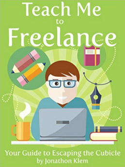

There are far too many crappy apps with interstitial and banner ads making a bad experience worse. It's much more than just an annoyance it's a privacy concern. A lot of free apps are gathering usage statistics about their users. My goal is to provide crappy apps without ads that don't gather any data.
If you enjoyed using this app, you may enjoy some of the other apps that I've written. A list of them can be view by clicking here. While you're there, feel free to peruse my developer blog if you're in to that sort of thing.
I also do web application development professionally. If you're interested in working with me, you can visit my business contact page here.
Lastly, are you a freelancer or do you aspire to become one? Check out my website TeachMeToFreelance.com. I write a lot on how to grow a freelancing business and how to deal with problems that freelancers face. Additionally I've written an e-book on the subject which can be purchased by clicking the book thumbnail below:

Even if you don't purchase the e-book if you use that or this link before making a purchase on amazon a percentage of the commission will go towards continuing to support me cranking out crappy apps with no ads or data gathering!